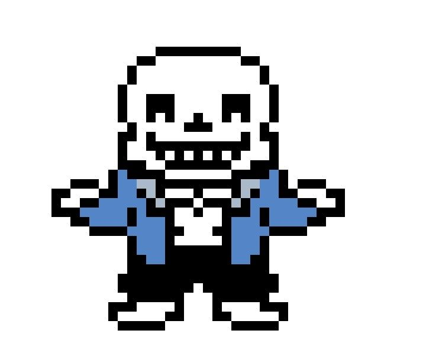

Sans é um personagem do videogame Undertale , de 2015. Ele é irmão
de Papyrus e inicialmente aparece como um NPC amigável com uma personalidade
tranquila e descontraída. Sans também aparece no videogame episódico Deltarune
, onde pode ser encontrado principalmente em sua loja, que é uma versão remodelada
do Grillby's Diner do jogo original. Sans foi criado por Toby Fox com o apoio da
artista Temmie Chang . O nome do personagem é baseado na fonte Comic Sans , usada
na maior parte de seus diálogos no jogo. Essa fonte Sans foi substituída por uma
"fonte fofa e irreverente" na versão japonesa do jogo.